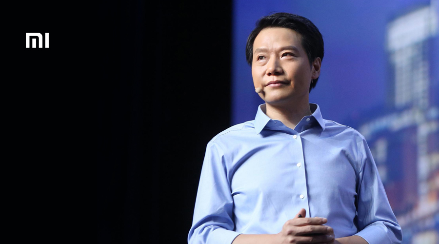

雷军 LEI JUN

个人简介
雷军（1969年12月16日－），湖北仙桃人，无党籍，中国大陆企业家、高级软件工程师、天使投资人，小米科技创始人、董事长兼首席执行官，金山软件公司董事长。
生平
- 雷军在1969年12月16日出生于湖北省仙桃市。1987年，毕业于湖北沔阳中学，进入武汉大学计算机系，并获得理学学士学位。在大学期间与朋友王全国合作成立黄玫瑰工作室。在这里雷军开发了BITLOK加密软件、免疫90杀毒软件以及RI内存清理工具等工具软件，同时还编撰了《深入DOS编程》和《深入Windows编程》两本书。大学毕业后，雷军就开始闯荡计算机市场了。他著过编程的书，写过加密软件，甚至还当过骇客。两年下来，雷军就成了武汉电子一条街颇有名气的人物。
- 1991年毕业后来到北京，同年底结识求伯君，1992年初在金山软件的珠海研发部实习，7月正式加入金山软件，并于8月15日组建金山北京开发部。1994年7月，成立北京金山软件公司，出任总经理。1998年8月12日，联想集团注资重组金山软件，雷军出任金山软件公司总经理。2000年3月出任卓越网董事长。2001年出任金山软件公司总裁兼首席执行官。
- 此外，他还于2000年12月出任北京市政府顾问。目前雷军还担任北京软件行业协会副会长。
- 2007年12月20日，传出雷军以“健康理由”辞去金山软件公司总裁与CEO的职务，留任副董事长的传闻，随后得到金山官方消息的确认。
- 2008年10月16日，雷军正式出任UCWEB的董事长。
- 2010年4月，雷军与林斌、周光平、刘德、黎万强、黄江吉、洪峰六人煮了一锅小米粥就联合创办了小米科技公司，并于2011年8月公布其自有品牌手机小米手机。如今小米科技公司旗下已有众多数码、科技产品及相关配件。同时，由小米公司以及其投资的青米（插线板）、华米（小米手环、华米手表）、绿米（小米家庭网关等）、田米（小米笔记本Air）等公司共同组建了小米生态链企业。截至2014年12月的融资，小米科技估值超过450亿美元。
- 2012年当选北京市人大代表。2013年当选为第十二届全国人民代表大会广东地区代表。
- 雷军作为重要的天使投资人，他的投资法则是：不熟不投，只投人不投项目，第三是帮忙不添乱。
- 2013年12月26日，成立“北京小米支付技术有限公司”，公司注册资本5000万人民币，公司法定代表人及董事长为雷军。
- 2018年当选为第十三届全国人民代表大会北京地区代表。
- 2018年6月21日，雷军携小米核心高管，开始在香港的上市路演，小米交易代码为01810.HK。招股书显示，小米计划发行21.8亿股股份，IPO定价区间在17港元至22港元，融资规模不超过61亿美元之间。法定股本总面值67.5万美元，由700亿A类股（价值17.5万美元）和2000亿B类股（价值50万美元）组成，据此调整后的小米总市值约为539亿-697亿美元。
- 2018年7月9日上午9点30分钟，雷军敲响了小米上市的锣声，带领这家成立8年的公司，正式登上了香港证券交易所的舞台，也成为港交所第一支“同股不同权”的上市企业，港交所甚至为此次上市特意定制了一面新的铜锣。2019年，小米成为了世界500强企业之一。
荣誉记录
- 1998年，受聘武汉大学荣誉教授。
- 1999年、2000年、2002年，《中国青年报》等媒体评选中国大陆IT业十大风云人物。
- 2002年，首届北京十大优秀青年企业家。
- 2005年，获选成为中国大陆游戏十大风云人物。
- 2012年12月，获得“中国经济年度人物新锐奖”。
- 雷军曾任两届海淀区政协委员，2012年当选北京市人大代表，2013年2月当选全国人民代表大会代表。
- 2013年3月，获得《财富》杂志“全球十一位颠覆商业规则的创新者”的奖项。
- 2013年10月，《中国工商》杂志、华商韬略编辑委员会、中华工商联合出版社联合发起《民营力量璀璨中国梦想——100位对民族产业贡献卓著的民营功勋企业家》荣誉报道活动，雷军获“对民族产业贡献卓著的民营功勋企业家”荣誉。
- 2013年12月，再次获得“中国经济年度人物”及“十大财智领袖人物”。
- 2014年2月，小米科技创始人雷军首次以280亿元人民币财富进入“胡润全球富豪榜”，跃居大中华区第57名，全球排名第339位。
- 2014年12月，《福布斯》杂志网站宣布，雷军当选《福布斯》亚洲版2014年度商业人物。
- 2015年4月3日，家乡沔阳商会成立，雷军当选为沔商总会会长。
- 2015年4月，入选《时代周刊》2015年“百位最具影响力人物”。
- 2015年10月，小米科技创始人、董事长兼首席执行官雷军在纽约联合国总部获得亚洲协会颁发的“2015亚洲创变者奖”（Game Changer Awards）。
- 2015年10月23日，胡润研究院发布了《2015年信中利·胡润IT富豪榜》，榜单显示，雷军以895亿人民币排名第三。
- 2015年10月26日，2015年福布斯中国富豪榜百强出炉，雷军以132亿美元排名第四。
- 2016年2月胡润研究院发布《2016胡润全球富豪榜》，雷军以920亿人民币财富排名第62位。
- 2016年3月2日，小米科技创始人雷军近日成为《连线》杂志英国版封面，配图标题是It’s time to copy China。
- 2016年3月15日，彭博社发布了最新一期的“彭博亿万富翁指数”，雷军以71亿美元排名第168位。
- 2016年4月，位列“中国最具影响力的50位商界领袖”第20名。
- 2016年5月18日，《关于中国证券投资基金业协会专业委员会委员基金从业资格认定的通知》发布，经中国证券投资基金业协会研究决定，雷军具备基金从业资格。
- 2016年12月8日，“影响中国”2016年度人物，雷军被评为“年度经济人物”。
- 2017年4月，《财富》50位中国商界领袖排名出炉，雷军排名第26位。
- 2018年10月，被中央统战部、全国工商联推荐为改革开放40年百名杰出民营企业家。
- 2018年10月，2018年胡润百富榜发布，雷军位列第10名。
- 2019年3月，以96亿美元财富排名2019年福布斯全球亿万富豪榜第143位。
- 2019年8月29日，被中央统战部、工业和信息化部、人力资源社会保障部、市场监管总局、全国工商联授予“优秀中国特色社会主义事业建设者”称号。
- 2019年胡润百富榜排名第29位。
- 2019年10月21日，获得“复旦企业管理杰出贡献奖”。
工作理念
投资法则
- 雷军做天使投资有三条原则，第一是不熟不投，第二是只投人不投项目，第三是帮忙不添乱。
- 雷军在选择投资项目时，通常考虑四个必备条件：大方向很好，小方向被验证，团队出色，投资回报率高。
- 只投熟人是雷军投资的最大特点，他的投资只限于“朋友”和“朋友的朋友”——最多不超过两层关系 。
团队素质
- 投资就是投人，在雷军的众多投资项目中，雷军最为看重创业团队的素质。
- 雷军投资的团队需要具备以下综合素质：
- 能洞察用户需求，对市场极其敏感；
- 志存高远且脚踏实地；团队里最好是两三个优势互补的人在一起；
- 互联网领域的创业者一定要有技术过硬、并有能带队伍的技术带头人；
- 团队需要具备低成本情况下的快速扩张能力，并且最好有创业成功经验。
投资法则
在对的时间去做对的事情是雷军的重要投资理念。雷军认为，创业首先要做最肥的市场，选择自己能做的最大的市场，大市场能造就大企业，小池子养不了大鱼，方向如有偏差，及会浪费宝贵的创业资源
；其次创业需要选择正确的时间点，并且专注只做好一件事情，并把事情做到极致，这样才有机会在某个垂直市场做到数一数二的位置。
雷军，他是一个非常睿智的人：大学三年级时就成为了百万富翁，凭帮人开发软件赚到了“第一桶金”；
他是一个善于坚持的人：是他的坚持，最终带领金山团队帮助金山公司完成上市，并成为如今最大的多元化民族软件企业；
他是一个有梦想的人：从前作为天使投资人帮助了无数创业者实现自己的梦想，如今重踏创业路 ，实现自己建立一个受世界尊敬的的企业的梦想 。
雷军讲究平衡，喜欢照顾很多人的感受，一件事情做的不对，他会立刻补救。他勤于反思，不停修正，每天都在“否定”自己，回顾、检查、修正再回顾。
雷军内心极其克制。第一次他离开金山，后来又说服自己回到金山。这是多难的抉择，大多数人开弓没有回头箭，雷军比很多人都要理智。
雷军最大的魅力在于，一个人或多或少都会高估自己，而低估别人，但其实肯定别人的价值才是最核心的。所以雷军身边极容易团结一股势力，它会产生一种莫可名状的忠诚。
雷军喜欢以退为进。这个圈子里每个人都很聪明，以前我们做一个项目，当时条件不是特别好，雷军就说，“今天我吃亏了不要紧，因为明天也许就会有回报。不是每一件事情都要那么控制，不控制是最好的控制。”
雷军和马云最大的不同在于，对于人才，马云喜欢在体系内辗转腾挪。而雷军喜欢培养人。他做投资，看人，人对了，下一秒钱就打到你账户里。雷军的方法是：你不愿意听我的，我就闭嘴，如果以后证明你错了而我对了，那你要向我道歉。
顺势而为，乘风而起。作为一个从未做过手机的外行，他影响了中国制造业的潮水方向，改变了外界对“国货”制造粗制滥造的刻板印象。十年奋斗，他带领小米成功上市，成为世界五百强。小米的成功，离不开他身上“海盗”般的冒险叛逆与“农夫”般的务实本分 。